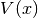
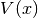
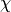
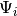
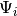
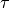
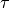

HagedornPropagator¶
About the HagedornPropagator class¶
The WaveBlocks Project
@author: R. Bourquin @copyright: Copyright (C) 2010, 2011, 2012, 2013, 2014 R. Bourquin @license: Modified BSD License
Inheritance diagram¶
Class documentation¶
- class WaveBlocksND.HagedornPropagator(parameters, potential, packets=[])¶
This class can numerically propagate given initial values
 in
a potential . The propagation is done for a given set of homogeneous
Hagedorn wavepackets neglecting interaction.
in
a potential . The propagation is done for a given set of homogeneous
Hagedorn wavepackets neglecting interaction.- add_wavepacket(packet)¶
Add a new wavepacket
to the list of propagated wavepackets.Parameters: packet (A tuple with a HagedornWavepacket
instance and  an integer.) – The new wavepacket and its leading component ![\chi \in [0,N-1]](../_images/math/71bc11364eff8b03a6ff9c533a1997506bbf71fa.png) .
.
- get_number_components()¶
Returns: The number  of components
of components  of .
of .
- get_potential()¶
Returns the potential used for time propagation.
Returns: A MatrixPotential subclass instance.
- get_wavepackets(packet=None)¶
Return the wavepackets
 that take part in the time propagation by the
current HagedornPropagator instance.
that take part in the time propagation by the
current HagedornPropagator instance.Parameters: packet (Integer or None) – The index  (in this list) of a single packet  that is
to be returned. If set to None (default) return the full list with all packets.
(in this list) of a single packet  that is
to be returned. If set to None (default) return the full list with all packets.Returns: A list of HagedornWavepacket instances or a single instance.
- post_propagate()¶
Given the wavefunction
 at final time
at final time  ,
perform some computations exactly once after running the ordinary
time propagation and before each time simulation data will be saved.
,
perform some computations exactly once after running the ordinary
time propagation and before each time simulation data will be saved.This method does not raise an exception but instead just does nothing and returns.
- pre_propagate()¶
Given the wavefunction
at initial time  ,
perform some computations exactly once before running the ordinary
time propagation and after each time simulation data was saved.
,
perform some computations exactly once before running the ordinary
time propagation and after each time simulation data was saved.This method does not raise an exception but instead just does nothing and returns.
- propagate()¶
Given a wavepacket
at time  compute the propagated
wavepacket at time
compute the propagated
wavepacket at time  . We perform exactly one timestep of size
 here. This propagation is done for all packets in the list
and neglects any interaction between two packets.
. We perform exactly one timestep of size
 here. This propagation is done for all packets in the list
and neglects any interaction between two packets.
- set_wavepackets(packetlist)¶
Set the list
of wavepackets that the propagator will propagate.Parameters: packetlist (A list of  tuples.) – A list of new wavepackets and their
leading components
tuples.) – A list of new wavepackets and their
leading components  to propagate.
to propagate.